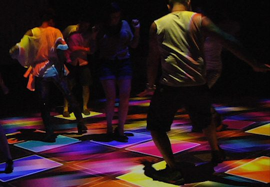
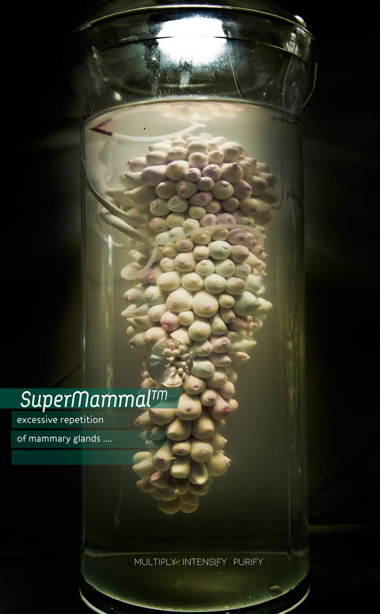
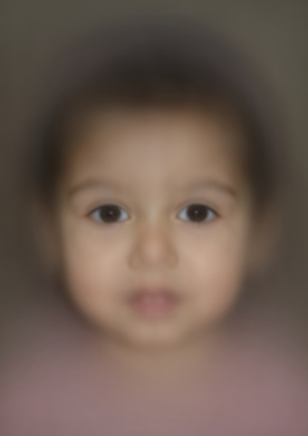

people doing strange things with electricity
The February dorkbot-nyc meeting took place at 7pm on Wednesday, February 1st, 2012 at Location One in SoHo.
It featured the stochastic resonance of:
 Josh Silverman: Pretty Extreme
The Synplode Project was started as a means of investigating a novel approach to group-based interactive systems. With elements of generative music and visuals, Synplode provides an opportunity for meaningful simultaneous interaction with large groups of participants. At dorkbot, Pretty Extreme founder Josh Silverman will be ruminating on the concepts of "generative," "meaningful simultaneous interaction" and "large." Josh will also be discussing other ongoing development projects at Pretty Extreme, and the challenges of pushing technology to do new things that he's already promised it can do.
http://prettyextreme.com Pinar Yoldas: Enhanced Organ Systems
Pinar Yoldas is a Turkish artist, designer, neuro-enthusiast. (She simply loves hijacking your nervous system in the name of art.) Building on her varied background in architecture, interface design and science, her work is a series of multi-modal experiments on the human sensorium. Lately, she has been designing synthetic biological systems as a living critique of our society. Pinar has a BArch from METU, MS from ITU, MA from Istanbul Bilgi University and an MFA from UCLA. Currently she is pursuing her PhD at Duke University. At Dorkbot NYC, she will introduce SuperMammal™, NeoLabium™ and MegaMale™ three enhanced organ systems designed to tackle with the future of pleasure and pain at a sensory level.
http://pinaryoldas.info Arno Klein: The Ellora Daily Photo
Arno Klein has taken a photograph of his 7-year-old daughter's face every day of her life. To study the development of her facial features, he has marked the thousands of images with landmarks, aligned the images to each other with these landmarks, created a time-lapse movie, and is working on image processing algorithms borrowed from brain imaging in a quest to automate chronological sorting of these images. After providing some context, he will show a 3-minute movie of the first 5 years of her life (at almost 10 days/second), and present current work and future plans for this unique dataset.
http://www.elloradaily.info
NEXT MEETING: 07 March 2012